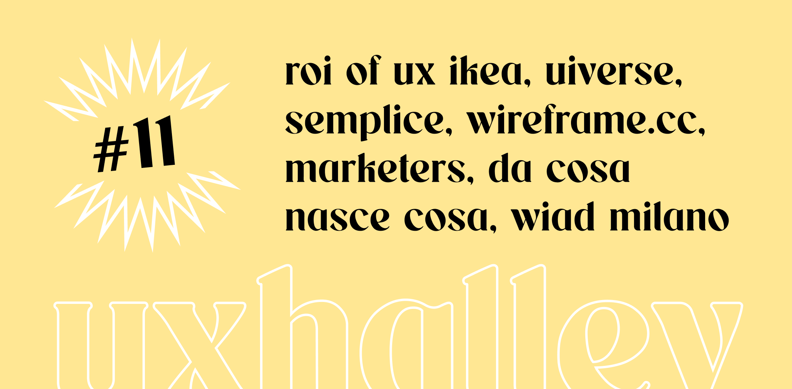

UX Halley, newsletter per designer
uxhalley, edizione #11
28 febbraio 2023 — UX Halley: una newsletter bisettimanale che raccoglie news e links utili sulla UX. Le regole sono semplici: max 5 minuti di lettura; se ti interessa, lo approfondisci; se ti piace, lo condividi; a prescindere ci vediamo tra due settimane. Facile facile
Immagine di copertina dell'edizione di UX Halley, newsetter per designer
Link per designer suggerito nell'edizione di UX Halley, newsletter per designer
ikea in digitale
Articolo di Harvard Business Review che racconta. tramite una intervista alla CDO di #ikea Retail, quali sono stati i passaggi, le difficoltà e le motivazioni, oltre che i vantaggi, nell'investire nei processi di digitalizzazione.
Link per designer suggerito nell'edizione di UX Halley, newsletter per designer
moduli html ready to use
Per il tuo prossimo progetto non hai scuse: oltre ad avere una grandissima raccolta di materiali dal quale prendere ispirazione, saprai anche come potranno essere realizzati (e risparmierai perché il codice è già pronto).
Link per designer suggerito nell'edizione di UX Halley, newsletter per designer
fast online wireframing
Ci sono strumenti come #figjam, #miro e tanti altri ma c'è da dire che questo fa il suo dovere: è online, è gratis, è semplice e ti permette di fare wireframe al volo senza troppe funzioni e fronzoli.
Link per designer suggerito nell'edizione di UX Halley, newsletter per designer
portfolio semplice
Il tallone d'Achille di ogni designer che si rispetti: il portfolio. Il mio consiglio è sempre lo stesso: portfolio dedicato, focus su progetti adeguati al colloquio, poche cose e fatte bene. Con Semplice sarà molto semplice.
Link per designer suggerito nell'edizione di UX Halley, newsletter per designer
da cosa nasce cosa
Un libro must to read per chi si occupa in generale di progettazione, che personalmente trovo nella classifica a parimerito con la Caffettiera del Masochista di Donald Norman. Tu lo hai letto? Che ne pensi?
Link per designer suggerito nell'edizione di UX Halley, newsletter per designer
guida linkedin
Se sei qui è perché usi LinkedIn, ma lo usi bene? Hai ottimizzato il tuo profilo? Stai traendo il massimo da questo strumento potentissimo? Che Social Selling Index Score hai? Se non lo hai fatto, è il momento di metterci la testa.
Link per designer suggerito nell'edizione di UX Halley, newsletter per designer
WIAD 2023
Il 4 marzo di quest'anno, tra qualche giorno, sarà il WIAD, detto anche World Information Architecture Day. In Italia ci sono alcune città che si sono mosse per accogliere speaker e designer e parlare di temi veramente importanti.